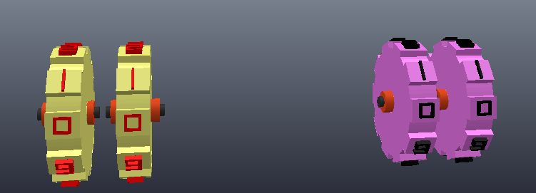
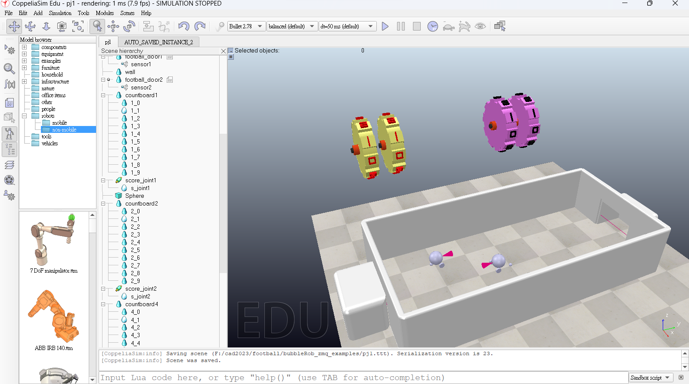
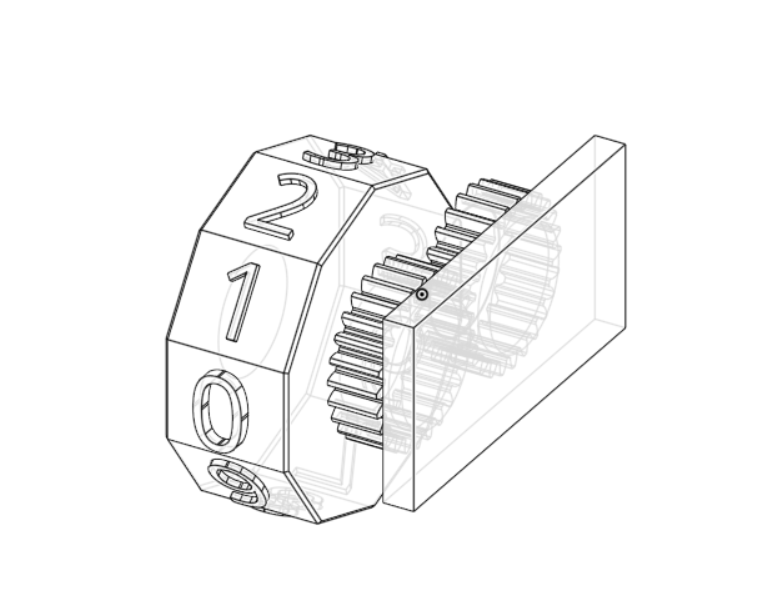
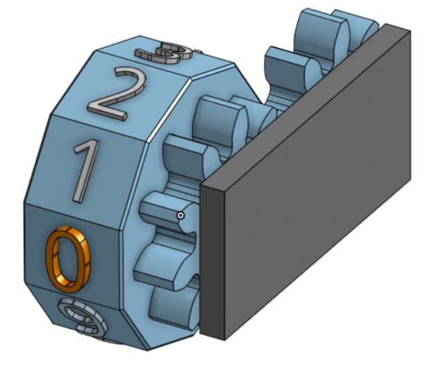
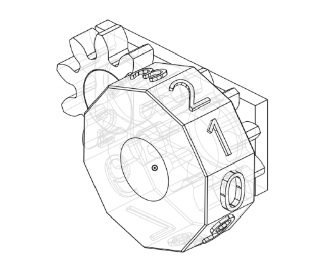
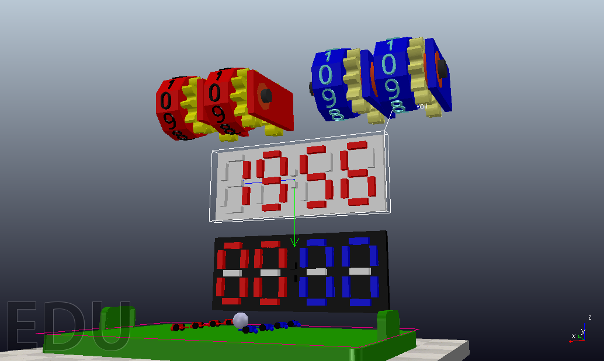

pj2ag3 <<
Previous Next >> 場地設置
pj3
分工表
1.場地設置 41023118 41023138
2.車子設計與組裝 41023122 41023124
3.輪盤記分板繪製 41023126 41023114
4.輪盤記分板程式 41023119 41023120
5.車子控制程式與設置 41023119 41023120
6.會議記錄 41023126
7.整體組合 41023119 41023120
5/15
完成輪盤記分板-editer:41023126


onshape:輪盤記分板
stl檔:wall countboard .ttt檔:pj3
第二版:pj3-2
5/23 目前進度
完成組員：41023119
組合 scene 及 model
加入足球場 scene
加入八個機器人
加入 LED 記分板及機械式計分版
加入 LED 記分板程式及出界重置球的程式

以下是記分板及出界程式
記分板程式：score wall code
機械式記分板程式未完成
機器人控制程式未完成
計時器及程式未完成
目前 football ttt 檔：newbing_bubbleRob_football pj3
5/24 目前進度
完成組員：41023119
加入計時器及程式

以下是計時器及計時器程式
計時器程式：time wall code
機械式記分板程式未完成
機器人控制程式未完成
目前 football ttt 檔：newbing_bubbleRob_football pj3 add time
5/25 目前進度
執行機器人控制程式後發現輪子在前進並轉彎時會解體，如下圖

已找到發現問題點，問題出在車子輪子與馬達座標沒重疊，導致程式出現錯誤
機器人車子正在修改
機器人控制程式：zmq_ipv6_bubbleRob1
機械式記分板程式未完成
機器人控制程式出現問題正在解決
以上完成組員：41023119
增加齒輪傳動 記分板
增加齒輪傳動 記分板-editer:41023126

onshape:輪盤記分板 第三版
stl檔:countboard-3
增加齒輪記分板.ttt 檔:newbing_bubbleRob_football pj3 add countboard.ttt
5/29 目前進度 增加10齒 輪盤計時器-editor:41023126


10teeth.stl檔:countboard-10teeth.stl
onshape:10teeth-countboard'
機械式記分板程式未完成
機器人控制程式出現問題正在解決
6/1 目前進度
editer:41023126
記分板程式與轉盤無法作動 但是大致上有了方向

.ttt檔:scoreboard4-undone .ttt
問題:程式並沒有發現錯誤但是輪盤計分板還是無法作動
推測有可能的問題
1.可能轉軸的參數設定錯誤
2.主動軸與從動軸設定有誤
在模擬中的問題
[CoppeliaSim:warning] Detected dynamically enabled, non-convex shapes. Those might drastically slow down simulation, and introduce unstable behaviour.
[CoppeliaSim:warning] Detected a static, respondable shape, built on top of a non-static tree. This might lead to strange and unrealistic behaviour.
chatgpt上的回覆
[CoppeliaSim:warning] 偵測到動態啟用的非凸形狀，可能會大幅降低模擬速度並導致不穩定的行為。
[CoppeliaSim:warning] 偵測到靜態的可回應形狀建立在非靜態樹上，這可能導致奇怪和不真實的行為。
這些警告表示在場景中檢測到一些問題。第一個警告表示檢測到使用非凸形狀的動態物體，這可能會使模擬速度變慢並引入不穩定的行為。建議您優化場景，使用凸形狀的物體，或減少非凸形狀物體的數量。
第二個警告指出檢測到一個靜態的可回應形狀，建立在非靜態樹的頂部。這可能會導致奇怪和不真實的行為。建議您檢查場景中物體的層次結構和約束，確保它們的設置正確，並符合您期望的行為。
完成組員：41023119
轉盤式記分板先參考 2a3-pj3ag4 的模型及程式
以下是 ttt 檔案：newbing_bubbleRob_football pj3 add score
6/5 目前進度
完成組員：41023119
統整各模型檔案並轉成 .ttm檔
檔案連結：model ttm
6/7 完成記分板cad(參考第四組的記分板)

onshape:countboard5
.stl:countboard5.stl
pj2ag3 <<
Previous Next >> 場地設置